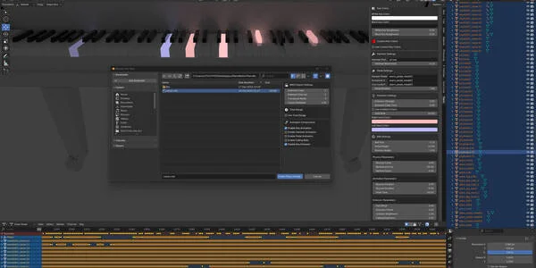
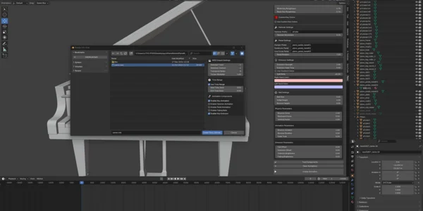
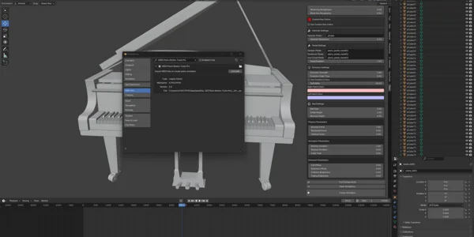
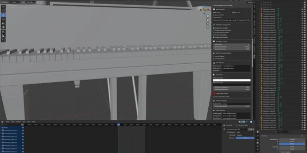
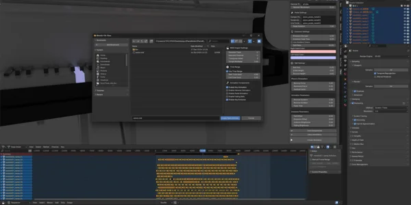
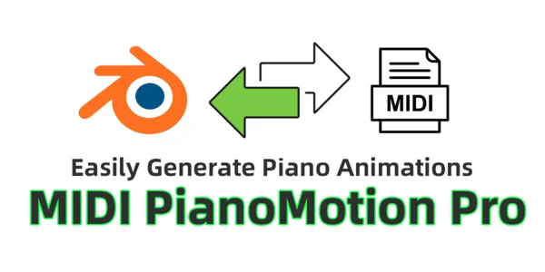
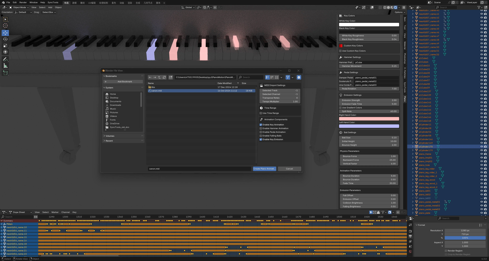
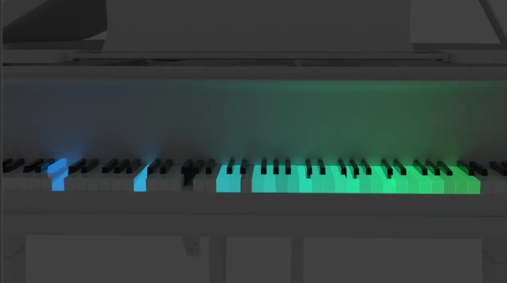
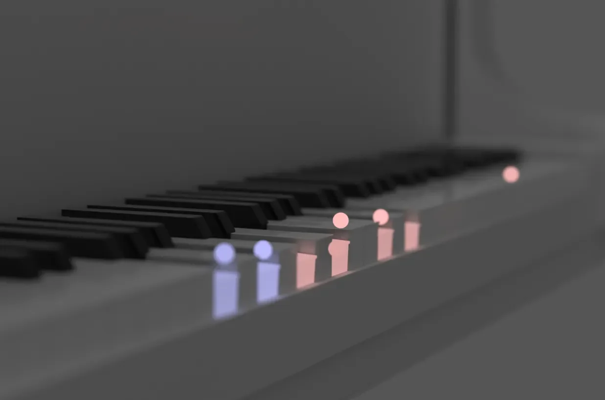

🎹MIDI Piano Motion Tools Pro
版本: 2.0 | Blender 4.2+ | 类别: 动画
MIDI Piano Motion Tools Pro 可将您的 MIDI 文件转换为 Blender 内完整动画的 3D 钢琴演奏。 它支持力度感应琴键运动、动态灯光、踏板和琴锤动画，甚至基于物理的落球效果。 无论您是为 YouTube 创作内容、在线教授钢琴还是制作音乐可视化，这款插件都能处理复杂性—让您专注于创意。

由 MIDI 力度驱动的帧精确琴键动画
逼真的琴锤和踏板运动（制音踏板、持续音踏板、柔音踏板）
可配置的动画时间、力度灵敏度和帧偏移
完全支持弯音、调制轮、移调和通道过滤
响应式琴键发光
分手颜色控制和可自定义的发光强度
每个 MIDI 音符的自定义琴键颜色映射
基于渐变的颜色系统，可控制方向和插值

模拟球体以精确的重力和弹跳落在琴键上
发光动画撞击效果、淡出和可自定义的轨迹
完全可调：大小、弹跳高度、时间偏移和发光

选择特定音轨和通道
仅从 MIDI 文件导入选定的时间范围
实时 MIDI 信息面板显示 BPM、音符数量、时长和每通道统计
3D 视图侧边栏面板 (View3D > Sidebar > Piano)
对象映射实时测试（琴键、琴锤、踏板）
清除/reset all animations and materials 只需一键
UI 列表和取色器工具，用于管理自定义琴键颜色
下载 ZIP 文件
安装 via Blender 偏好设置 > 插件 > 安装
启用插件
在 3D 视图侧边栏中打开 Piano 标签
Blender 3.6 or later
兼容的 3D 钢琴模型（不包含在内）
标准 MIDI file (.mid)
Mido 库（已捆绑在 libs 文件夹中）
YouTube 音乐动画
在线钢琴教育者
艺术可视化
表演视觉效果
钢琴模型演示影片
"这无疑是 Blender 最完整的 MIDI 动画工具。"
Dennis Denny — 动画总监, ★★★★★
"用它为我的现场钢琴演奏生成了令人惊叹的视觉效果—颠覆性的！"
Michael — Blender 音乐人, ★★★★★
单用户许可证 – $30.00
终身更新
包含商业使用
优先支持
功能完整且直观
可按您的独特风格自定义
专业级效果，零手动关键帧
由真正的 Blender 用户积极开发和支持
支持 触手可及—通过 Blender Market 直接联系创作者或发送电子邮件： qq475519905@gmail.com
Piano运动 Pro
Piano运动 Pro 是一个动画辅助插件-on for Blender 可以将标准 MIDI 文件导入 Blender, automatically generating realistic animations for piano key presses, pedal movements, hammer actions, and optional effects like falling balls and key illumination. It's perfect for:
Music 动画 Creators: 快速的ly produce synchronized piano performance visualizations.
教育/演示nstrations: 高light rhythm and note positions with glowing keys or falling balls.
3D Artists: 消除手动为每个关键帧制作动画的繁琐过程, allowing more focus on design and camera work.
本手册将指导您完成安装, UI functionality, and a complete usage workflow, helping you create perfectly synchronized music animations with ease.
安装 the .zip via Blender 偏好设置:
Obtain the .zip file, e.g., MIDI_Piano运动_工具s.zip, from the website or the developer.
In Blender, go to 编辑 > 偏好设置 > 插件.
Click 安装, select the .zip file, and click “安装 插件”.
In the add-on list, find Piano运动 Pro 并勾选复选框启用.
mido 库 Dependencymido 是一个用于处理 MIDI 文件的 Python 库, required by Piano运动 Pro.
如果您看到类似的错误 "No module named 'mido'", it means the library is missing.
Solutions:
In Blender's Python Console, run:
import pip pip.main(['install', 'mido']) Or:
安装 mido using your system Python, then copy the module into Blender’s scripts/modules folder.
重启 Blender. If successful, MIDI import will work correctly.
After installation, press N in the 3D 视口并进入 Piano 标签以访问插件面板.
When enabled, the add-on panel appears in the 3D 视口下的 Piano tab (N key). 界面分为多个部分:
MIDI 文件 Info (shown after successful import)
动画 组件s
动画 Timing
MIDI 控制ler 设置
键 设置
键 颜色s & Custom 键 颜色s
Hammer 设置
Pedal 设置
Emission 设置
Ball 设置
Test 组件s & 清除 动画s
创建 动画
BPM: 每分钟拍数 (tempo).
注意 计数: 总计 number of notes in the MIDI file.
持续时间: 播放 length in seconds.
通道 Info: 列表s detected channels with note count, instruments, and velocity ranges.
用于识别多轨文件中的正确音轨-channel MIDI files.
启用 键 动画: 创建s press/release animations for piano keys.
启用 Hammer 动画: 动画内部琴锤 to simulate real mechanical movement (requires correct naming).
启用 Pedal 动画: Auto-generates keyframes for pedals based on MIDI messages (64, 66, 67).
启用 Falling Balls: 添加s Synthesia-style falling balls for notes.
启用 键 Emission: 制作s keys glow when pressed and fade when released.
开始 帧: 帧 where animation begins on the timeline.
键 Press 持续时间: 数字 of frames a key stays pressed visually (independent from actual note duration).
速度 Influence: Weight (0–1) of note velocity affecting animation length and speed.
Use Pitch Bend: 启用s MIDI pitch wheel effects (e.g., glide).
Pitch Bend 范围: 弯音的最大半音范围 (e.g., 2–4 recommended).
Use Modulation: 启用s modulation wheel effects.
Modulation 效果:
VIBRATO: 琴键轻微振动
EMISSION: 发光亮度控制
BOTH: 颤音和亮度同时变化
注意: 需要 MIDI 文件中的实际调制数据.
White 键 Prefix / Black 键 Prefix: 用于识别白键和黑键对象名称.
键 Separator: 字符 between prefix and number (e.g., ., _).
Example: White键.001 → Prefix = White键, Separator = .
(1) 键 颜色s
White/Black 键 颜色: 设置s base color of keys.
Roughness: 材料 roughness (0 = smooth, 1 = rough).
(2) Custom 键 颜色s
Use Custom 键 颜色s: 启用s per-note glow colors (for notes 21–108).
分配特定颜色 using the mapping or eyedropper tool.
Hammer Prefix: 琴锤对象的命名前缀 (e.g., pCube).
Hammer 移动ment: 距离 the hammer moves when triggered.
Damper / Sostenuto / Una Corda Pedal: 对象 names for pedal animation.
Pedal 旋转: 旋转 angle around the X-axis when pressed.
Emission Strength: 按键时的亮度.
Fade 帧s: 数字 of frames until glow fades out.
Use Gradient 颜色s: 启用s color gradients based on direction.
Gradient Direction: Horizontal / Vertical / Single key.
Gradient 停止s: 定义颜色停止点 for the gradient.
如果不使用渐变, glow color is assigned by hand (left/right) using split_note + emission_color.
(1) Main 参数s
Ball 大小: 每个球的半径.
开始 高度: Initial Y-position above keys.
Bounce 高度: 撞击后的回弹高度.
(2) 物理
Bounce 力: 球回弹乘数.
后退 力: Horizontal movement.
Vertical Factor: Larger value = more vertical bounce.
(3) 动画
Bounce 持续时间 / 时间: 弹跳动画的时间.
Fade 时间: 帧s until ball shrinks and disappears.
(4) Emission
Emission 偏移: 发光效果时间偏移.
Timing 偏移: 从按键开始的下落时间偏移.
碰撞 Brightness / Falling Brightness: 撞击和下落时的发光强度.
Test 组件s:
Checks if objects (keys, pedals, hammers) are properly named and detected.
警告s will indicate missing parts, allowing you to correct them beforehand.
清除 动画s:
删除s all animations, objects, and materials generated by the plugin.
在导入新 MIDI 或更改设置时很有用.
执行流程的主按钮:
打开文件浏览器以选择 .mid file.
解析 MIDI 并根据面板设置生成关键帧.
时间line and Action 编辑or will display the new animations.
A message will confirm success, e.g., “动画 created! 持续时间: 5:12”.
1. 准备工作
确保场景中包含命名正确的钢琴模型 (keys, hammers, pedals).
Apply transforms (Ctrl + A) to normalize axes and origins.
保存 a backup .blend before testing.
2. Test 组件s
Use the “Test 组件s” button to detect missing or misnamed parts.
3. 导入 MIDI
Click “创建 动画” and select a .mid file.
选择特定轨道/channels or transpose if needed.
4. Review & 调整
播放动画并检查琴键, pedals, balls, and emission.
如果需要更改 (e.g., duration, colors), 清除 动画 and 创建 动画 again.
5. Finalize
重复 as needed until satisfied.
添加 camera, lighting, and export the final animation.
6.1 No animation?
检查 mido 是否已安装.
Use “Test 组件s” to find misnamed objects.
尝试使用外部软件将有问题的 MIDI 转换为标准格式.
6.2 键s not glowing?
Ensure “启用 键 Emission” is checked.
增加发光强度或启用 Bloom 在 Eevee 中.
确认正确的材质 connections.
6.3 部分 animation only?
Use "时间 范围" 在导入对话框中 to set duration.
删除 excess keyframes manually in the Action 编辑or.
限制到特定音轨/channels during import.
6.4 Balls not showing?
Confirm “启用 Falling Balls” is enabled.
调整 ball size and ball height if invisible.
检查是否选择 tracks contain note data.
6.5 调整ing start frame or speed?
更改 开始 帧 or 速度倍率 在导入对话框中.
可以通过移动关键帧进行微调, but major changes should use the panel options.
Piano 模型 Specs
52 White 键s
36 Black 键s
88 Hammers
3 Pedals
命名规则
White 键s: meshId57_name.1 to .52
Black 键s: meshId56_name.1 to .36
Hammers: pCube1 to pCube88
Pedals: piano_pedal_metal01, metal02, metal03
性能 提示
较大的 MIDI 文件处理时间更长.
使用短 MIDI 文件进行测试以提高效率.
通过本手册, you now have the tools to turn MIDI files into stunning piano animations using Piano运动 Pro. Whether for teaching, visualization, or artistic projects, this plugin simplifies a complex task into a creative workflow.
如需高级功能或进一步自定义, refer to other documentation or join discussions in the community.
Happy animating, and may your creations shine!
Tip: 添加 UI screenshots or rendered images throughout this manual to enhance clarity and understanding.
Author: 475519905
版本: 1.0
类别: 动画
Contact: [qq475519905]
GNU General Public 许可证 v3.0 (GPL-3.0)
如有问题请'd like this formatted into a PDF, turned into a webpage, or if you want help adding screenshots to specific sections!